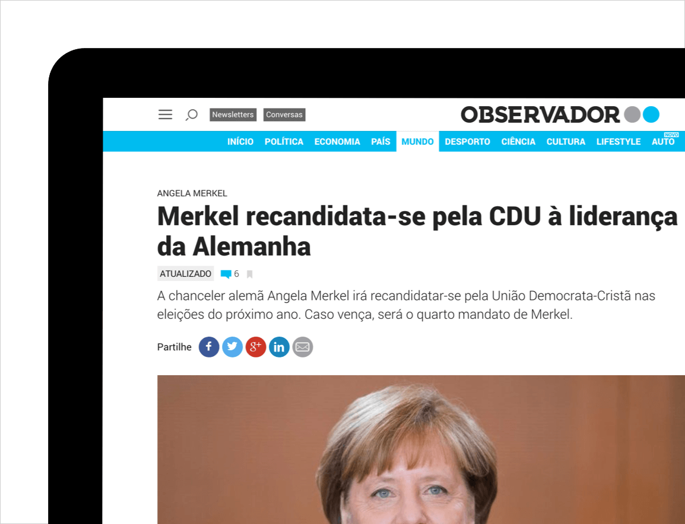

Online Media
Observador
http://observador.pt
Observador is a news page. Shares the latest stories using a clear language in multiple formats targeting Portuguese speaking people around the world. Its core runs on Wordpress and another powerful open source technologies giving it an incredible flexibility to quickly achieve product needs. In less than a year won the award for the Best news media website in the country and after a few more awards was mentioned by the Wordpress community as "A case study around the world" for its very impressive architecture.
- 

Design
At the top of the most viewed webpages in the country, Observador is a very ambitious Portuguese News page. Went very fast to the top and came up with a variety of fresh new ideas and different formats. Design was based on a 12 column layout for mobile and a 24 column for desktop.


Tools
The working environment needed to be as fast as possible. We were a really small team with a huge responsability of taking our project to another level. Sketch became the main tool for doing fast and high fidelity prototypes in the year of 2014. Fortunately this software has got a lot of improvments.
 Sketch
Sketch Invison
Invison Grunt
Grunt- Github
 Wordpress
Wordpress Sass
Sass